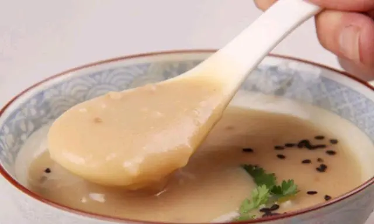

舌尖上的山东之（济南）甜沫
发布时间: 2022-04-07 4859 次浏览
-
济南甜沫距今已有三百年历史，从古至今，济南大街小巷的早餐，都少不了它的身影。济南甜沫口感美味醇香，是济南众多名吃之首，甜沫不甜却是咸香的，这又能显示出济南人的幽默、朴实、勤劳的传统民风。
相传，明末清初，战乱导致大批难民涌入济南，有一家田姓粥铺经常施粥赈济，来喝粥救命者日益增多。粥铺难满众求，便加入大量的菜叶和咸辣调料，灾民每当见田家煮粥的大锅里泛起的白沫，便亲切的称之为救命的“田沫”。当时有一外地赶考的落难书生，吃粥后感觉甜美无比，心想甜沫果不虚传。后来书生做官后，又专程来济南再喝甜沫时，已无昔日感觉，问其因。老板答称实是“田沫”，田姓之粥的意思。官员恍悟，当初只听音而未辨字迹之误所致，于是题写“甜沫”匾额，并吟诗一首：“错把田沫作沫甜，只因当初历颠连。阅尽人世沧桑味，苦辣之后总是甜。”从此这种带咸味的粥便叫做甜沫了。
也有说是甜沫最早叫添沫儿，一碗小米粥做好后，再添上点粉丝、豆腐丝、花生碎、芝麻之类的末儿，口感更加醇香。后来人们以其谐音演化为甜沫，成为济南传统美食的。
制作甜沫需要把花生提前泡好，煮熟捞出备用，花生要脆点好吃。取适量小米面（也可掺点玉米面），放入盆中，加入胡椒粉，清水搅匀成稀的面水备用。起锅烧油，放入姜末，煸出糊香气。加适量十三香，微炒。加适量清水，放入豆腐丝、粉条、炸豆腐、花生，待水开后加入适量盐和味精调味，把和好的小米面水慢慢倒入，边倒边搅拌，使其调和均匀，等再次开锅，把切碎的菠菜放入，立即关火，搅拌均匀即可，一碗好喝的甜沫就做好了。